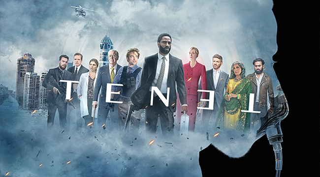

Sau 7 năm kể từ New World – bộ phim đạt thành tích hơn 4.68 triệu vé, hai tên tuổi lão làng trong làng điện ảnh Hàn Quốc mới tiếp tục tái hợp trong Truy Cùng Giết Tận – một bộ phim hành động siêu “nặng đô”.
1
0

6 đạo diễn tỉ đô làm nên thành công của những bom tấn đình đám nhất
Hollywood
Hollywood luôn yêu thích những dự án điện ảnh với tiềm năng trở thành bom tấn. Trên con đường đó, đạo diễn là một trong những vị trí quan trọng nhất để “phù phép” cho một câu chuyện trở nên vĩ đại. Đằng sau những tác phẩm nổi tiếng nhất luôn có bóng dáng của
1
0